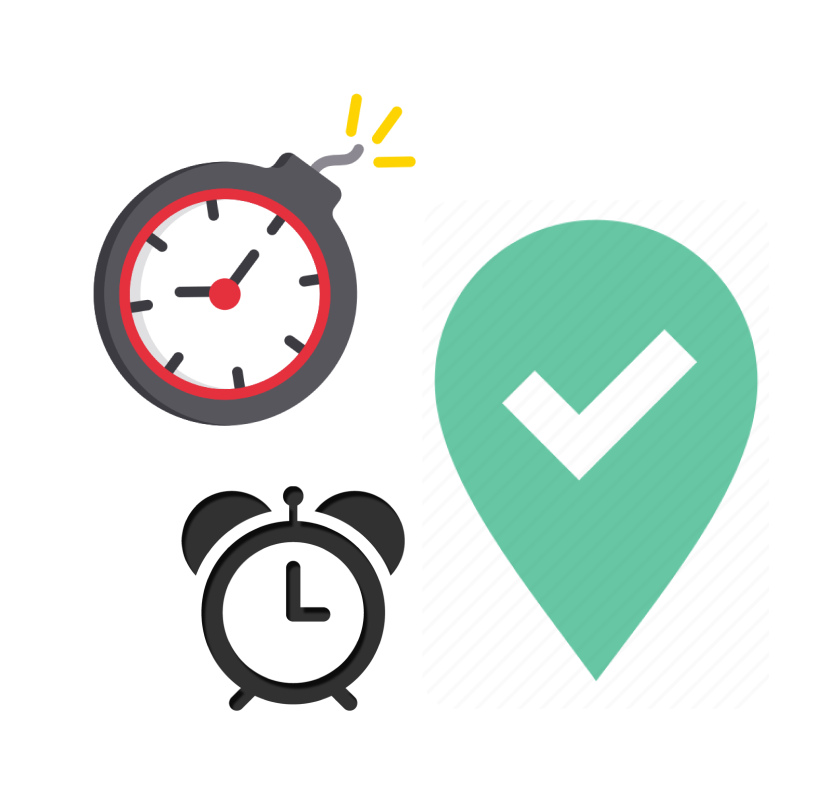

What is backwards planning?
It’s just like how it sounds. Rather than planning towards the deadlines, we plan
from the deadlines, using them as
checkpoints. MyPlanner analyses your key endpoints and works backwards from there to develop your
personalized schedule.

Why is backwards planning the better way?
Backwards planning is goal-oriented, and at the end of the day, who doesn’t like
achieving their goals. This is not to
say that the process is unimportant however. MyPlanner uses goals to create a custom process for
each user. A happy
marriage of goals and processes is what makes MyPlanner so special.